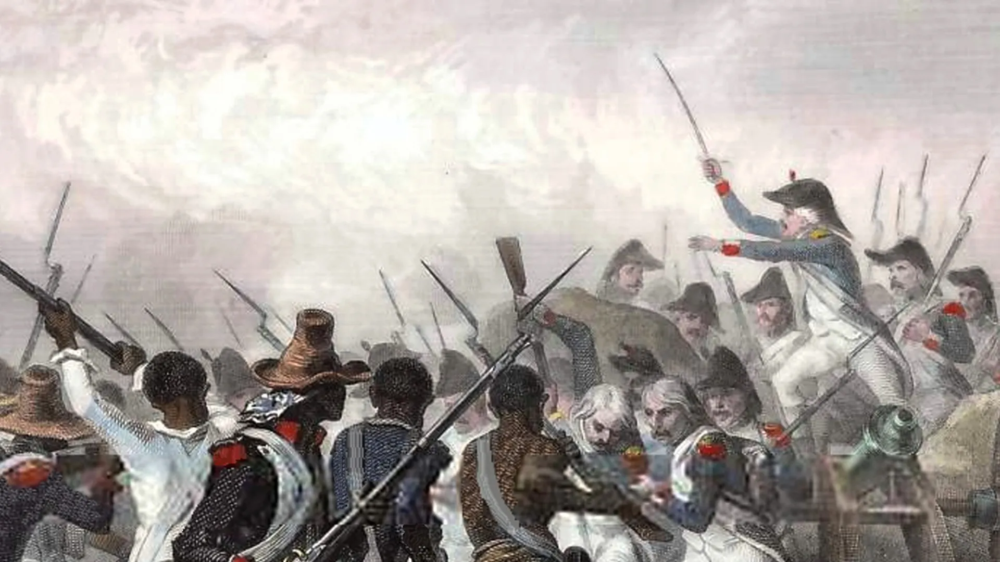

The history of this Nation dates back all the way to 600 BC, when it was originally inhabited by an Arawak Culture known as the Taino, who had given the region its name of Ayiti (Haiti).
Fast forwarding to the 17th century, when the French had arrived upon the island of Hispaniola and renamed it to “Saint Domingue”. During their colonisation of the area, many west Africans were imported there into slave labour, making the island France’s wealthiest colony of the 18th century. The Haitians, however, revolted against their oppressors in 1791, gained their independence in 1804, and returned the colony to it original Taino name of “Haiti”.
This revolution marked Haiti as the first black independent country and functioned as an inspirational example for African Americans, especially during the 19th century. The United States, however, did not give them recognition as an independent state until 1862, as they feared it as a risk to their booming slave industry at that time. In response to this, several movements led by notable figures such as Martin Robison Delany and James Theodore Holly, would encourage many African Americans to emigrate to Haiti from America.
It would not be until the year of 1915 when Vilbrun Guillaume Sam, Haiti’s Fifth president, would establish a dictatorship, and cause the populace to revolt. In response to this revolution, Guillaume Sam executed 167 prisoners, who were all some of Haiti’s former elites. The citizens, infuriated, had him hung later in Port-Au-Prince, which would later cause Haiti’s national debt to spiral out of control.
As a result of Haiti’s poor economy, in 1915 July 28th the 28th president of the United States Woodrow Wilson, gave the military the green light to invade and occupy Haiti. This occupation would only end in 1934, by the efforts of Stenio Joseph Vincent, the 28th President of Haiti, and under the orders of Franklin D. Roosevelt, the 32nd president of the United States.
The Revolution of 1946, considered to be a staple in Haiti’s History and development, in where Haiti had elected its first ever National Assembly, transitioning the country to an elected Civilian Government.

Haiti would not see the end to its subjugation unfortunately, with the rise of a new dictatorship established by Francois “Papa Doc” Duvalier. Duvalier, the 34th president of Haiti, and an aspiring voodooist, was one of the most cruel and deranged tyrants in Haiti’s history. His regime is considered by many as the most corrupted and autocratic rules of modern time. It was estimated that over 30,000 Haitians were killed by his private guard the Tonton Macoutes. He would only later die by a heart disease on April 21st of 1971, and would be succeeded by his 19 year old son Jean Claude “Baby Doc” Duvalier.
Notable Figures
Martin Robison Delany (1812 to 1885)
Born on May 6th of 1812, Charles Town Virginia, Delany was a free man at birth from his mother’s royal lineage, as her father (Delany’s Grandfather) was a Mandingo prince.
Working as a successful Physician, and one of the first African Americans accepted into Harvard Medical School, Martin Robison Delany had worked tirelessly to end slavery.
His life of Activism started off as an abolitionist, aiding in the relocation of escaped slaves, and working in the integrated militia to protect the Black community from racist attacks.
Stenio Joseph Vincent (1874 to 1959)
Born in Port-Au-Prince on February 22nd, 1874, Stenio Vincent was the President of Haiti from 1930 to 1941, and was the leading figure in freeing Haiti from the occupation of the United States.